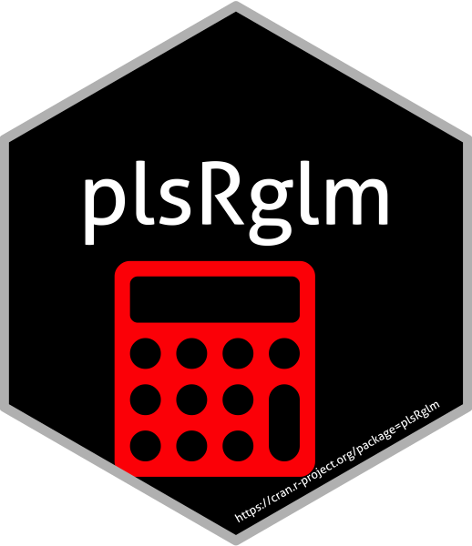

Raw coefficients for bootstrap computations of PLSGLR models
Source:R/coefs.plsRglm.raw.R
coefs.plsRglm.raw.RdA function passed to boot to perform bootstrap.
Usage
coefs.plsRglm.raw(
dataset,
ind,
nt,
modele,
family = NULL,
maxcoefvalues,
ifbootfail,
verbose
)Arguments
- dataset
dataset to resample
- ind
indices for resampling
- nt
number of components to use
- modele
type of modele to use, see plsRglm
- family
glm family to use, see plsRglm
- maxcoefvalues
maximum values allowed for the estimates of the coefficients to discard those coming from singular bootstrap samples
- ifbootfail
value to return if the estimation fails on a bootstrap sample
- verbose
should info messages be displayed ?
See also
See also bootplsglm.
Author
Frédéric Bertrand
frederic.bertrand@lecnam.net
https://fbertran.github.io/homepage/